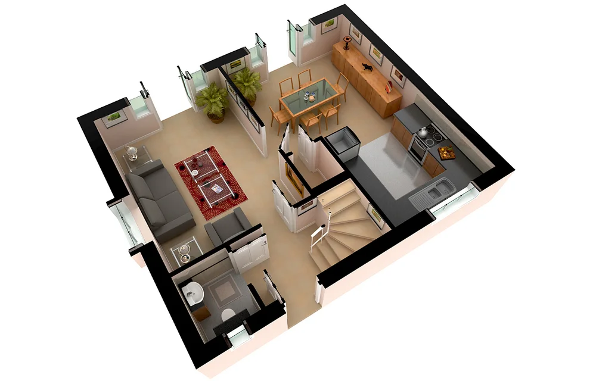

MD Construcciones
Regularizaciones, obra nueva y dirección técnica con respaldo profesional matriculado. Enfoque directo y seguimiento riguroso en cada etapa.
home ¿Buscás algo ya diseñado? Conocé nuestra casa prediseñada

UBICACIÓN
Funes & Roldán
Juan Martín Dossena
Maestro Mayor de Obras
Habilitaciones profesionales
- check_circle Gestión de proyectos
- check_circle Dibujo y cálculos de obras
- check_circle Presentación y seguimiento de documentación municipal
Soluciones integrales de obra y documentación
Proyectos y Dirección de Obra
- Anteproyecto y proyecto arquitectónico
- Dirección técnica de obra
- Seguimiento y control de ejecución
Cálculo de estructuras
- Cálculo estructural
- Cómputo métrico y presupuestos
- Especificaciones técnicas
Regularización y final de obra
- Planos de subdivisión y PH
- Regularización municipal
- Final de obra y habilitaciones
Proyectos reales en Funes y Roldán


Descubrí nuestra casa prediseñada
Ofrecemos una vivienda estándar con planos definidos, cálculos estructurales y especificaciones listas para ejecutar en tu terreno. Diseñada para ahorrar tiempo de proyecto y empezar a construir rápidamente.
- check_circle Planos técnicos aprobados y listos para presentar
- check_circle Memoria de cálculo estructural incluida
- check_circle Especificaciones de materiales y terminaciones
- check_circle Construcción tradicional en tu lote, no en fábrica

Proceso técnico claro y transparente
Relevamiento
Evaluación del estado actual y definición técnica del alcance.
Propuesta Técnica
Confección de documentación, planos y estrategia de obra.
Dirección y Cierre
Ejecución, seguimiento y gestión municipal definitiva.
Preguntas frecuentes
¿Cómo iniciar una obra? expand_more
¿Cómo regularizar planos? expand_more
¿Importancia del revoque técnico? expand_more
¿Tu documentación está completa?
Completá el checklist y sabé si tu propiedad está lista para regularizar.
Respaldo técnico para tu obra
Contactame para evaluar tu caso y definir los próximos pasos.